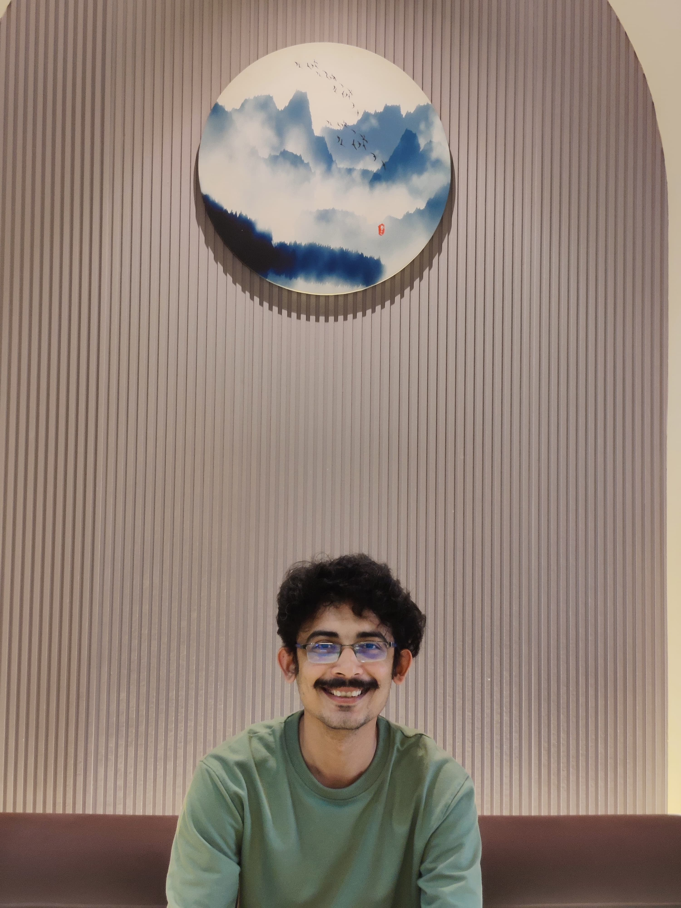

Varshit Dalicha
Research Scholar | IIT Gandhinagar
Welcome to my academic portfolio. I am a Research Scholar at IIT Gandhinagar, currently pursuing my PhD working with Prof. Vikrant Jain. My work primarily focuses on Studying Gully Erosion using Geospatial Techniques.
Areas of Expertise
- Risk Assessment: Finding out the potential areas where the risk of hazard (Gully Erosion) is high.
- Drone Photogrammetry: Using drones to create and analyse 3D models.
- Landscape Evolution: How the landscape will evolve in the coming years.
- Technical Skills: ArcGIS Products, QGIS, Python

Education
Ph.D. in Earth Sciences
2023 – PresentIIT Gandhinagar
Thesis: "Analysing Gully Erosion using DEM"
MTech in Geoinformatics and Its Applications
2020 – 2022Maulana Azad National Institute of Technology
Dissertation: "ANALYSIS ON THE ACCURACY OF OPEN-SOURCE DEM USING GNSS DATA"
B.E. in Civil Engineering
2016 – 2019Gujarat Technological University
Diploma in Civil Engineering
2013 - 2016Gujarat Technological University
Publications
1. Research Articles (Journals)
List updating soon...
2. Conference Proceedings
List updating soon...
3. Workshops & Seminars
List updating soon...
Contact Information
Email: varshit.dalicha@iitgn.ac.in
Office: D18, 3rd Floor AB12, Department of Earth Sciences, IIT Gandhinagar